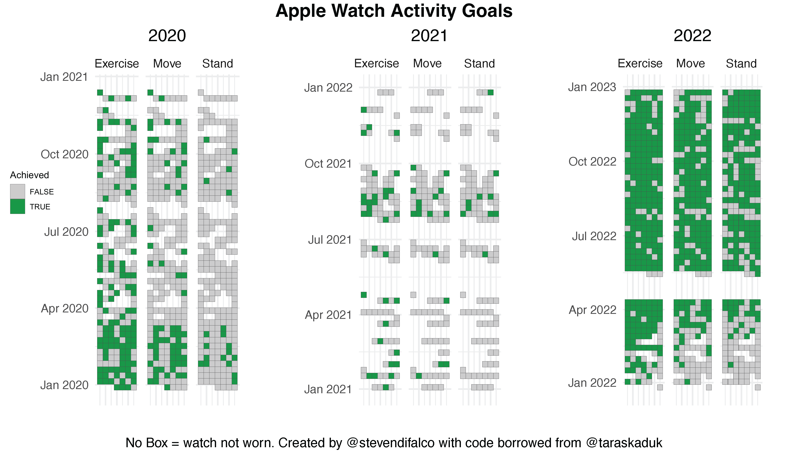

record category, I had over 1,000,000 rows of data going back to 2015- I decided to not explore that data just yet. For this post, I focused on workout records including the Exercise, Move, and Stand daily goals.
#libraries
library(XML)
library(tidyverse)
library(lubridate)
library(scales)
library(ggthemes)
library(ggpubr)
#xml object containing data
xml <- xmlParse(file = "apple_health_export/export.xml")
#set up dataframes for types of data
df_record <-XML:::xmlAttrsToDataFrame(xml["//Record"])
df_activity <- XML:::xmlAttrsToDataFrame(xml["//ActivitySummary"])
df_workout <- XML:::xmlAttrsToDataFrame(xml["//Workout"])
df_workoutstats <- XML:::xmlAttrsToDataFrame(xml["//WorkoutStatistics"])
#Separate out dateComponent into year, month, day. Easier to group category and set up boolean.
df_activity_cleaned<-df_activity %>%
mutate(date = as.Date(dateComponents)) %>%
select(-dateComponents) %>%
select(-activeEnergyBurnedUnit) %>%
mutate_if(is.character, as.numeric) %>%
rename(move = activeEnergyBurned,
exercise = appleExerciseTime,
stand = appleStandHours,
move_goal = activeEnergyBurnedGoal,
exercise_goal = appleExerciseTimeGoal,
stand_goal = appleStandHoursGoal) %>%
mutate(year = lubridate::year(date),
month = month(date),
day = day(date),
wday = wday(date),
move_pct = move/move_goal,
exercise_pct = exercise/exercise_goal,
stand_pct = stand/stand_goal,
move_bool = if_else(move_pct < 1, FALSE, TRUE),
exercise_bool = if_else(exercise_pct < 1, FALSE, TRUE),
stand_bool = if_else(stand_pct < 1, FALSE, TRUE))
#pivots data, arranges by category, and adds boolean record
df_activity_tall_bool <- df_activity_cleaned %>%
select(date, Move = move_bool, Exercise = exercise_bool, Stand = stand_bool) %>%
gather(category, boolean, -date)
#resets date fields and adds a week category for organizing plots
df_activity_tall <- df_activity_tall_bool %>%
left_join(df_activity_tall_bool, by = c("date", "category")) %>%
mutate(month = ymd(paste(year(date), month(date), 1, sep = "-")),
year = year(date),
week = date - wday(date) + 1,
wday = wday(date),
day = day(date)) %>%
filter(year %in% c("2020","2021","2022"))#Plot set up - filter each year and create plot per year. Not sure how to facet this.
df_2020 <- df_activity_tall %>%
filter(year == 2020)
A2020 <- df_2020 %>%
ggplot(aes(x = wday, y = week, fill= boolean.x)) +
geom_tile(col = "grey30", na.rm = FALSE) +
theme(panel.grid.major = element_blank()) +
scale_fill_manual(values = c("grey80", "#1a9641")) +
facet_wrap(~ category)+
coord_fixed(ratio = 0.15) +
guides(fill="none") +
ggtitle("2020") +
xlab("")+
ylab("")+
theme_minimal()+
theme(axis.text.x = element_blank())+
theme(plot.title = element_text(hjust = 0.5))
df_2021 <- df_activity_tall %>%
filter(year == 2021)%>%
arrange(date)
A2021 <- df_2021 %>%
ggplot(aes(x = wday, y = week, fill= boolean.x)) +
geom_tile(col = "grey30", na.rm = FALSE) +
theme(panel.grid.major = element_blank()) +
scale_fill_manual(values = c("grey80", "#1a9641")) +
facet_wrap(~ category)+
coord_fixed(ratio = 0.15) +
guides(fill="none") +
ggtitle("2021") +
xlab("")+
ylab("")+
theme_minimal()+
theme(axis.text.x = element_blank())+
theme(plot.title = element_text(hjust = 0.5))
df_2022 <- df_activity_tall %>%
filter(year == 2022)%>%
arrange(desc(date))
A2022 <- df_2022 %>%
ggplot(aes(x = wday, y = week, fill= boolean.x)) +
geom_tile(col = "grey30", na.rm = FALSE) +
theme(panel.grid.major = element_blank()) +
scale_fill_manual(values = c("grey80", "#1a9641")) + #, labs("Achieved")) +
facet_wrap(vars(category), labeller = )+
coord_fixed(ratio = 0.15) +
guides(fill="none") + #first include the labels above first then turn off guides
ggtitle("2022") +
xlab("")+
ylab("")+
theme_cowplot()+
theme(axis.text.x = element_blank())+
theme(plot.title = element_text(hjust = 0.5))
#get legend from plot- have to include first then do extract
my_legend <- get_legend(A2022)
legend <- as_ggplot(my_legend)
#Arrange output for export
arrangedPlots <- ggarrange(A2020, A2021, A2022,
ncol = 3)
annotate_figure(arrangedPlots, top = text_grob("Apple Watch Activity Goals", color="black", face = "bold", size = 14),
bottom = text_grob("No Box = watch not worn. Created by @stevendifalco with code borrowed from @taraskaduk", color="black",size=10))
ggsave("legned.png",legend, width=1, height=1)